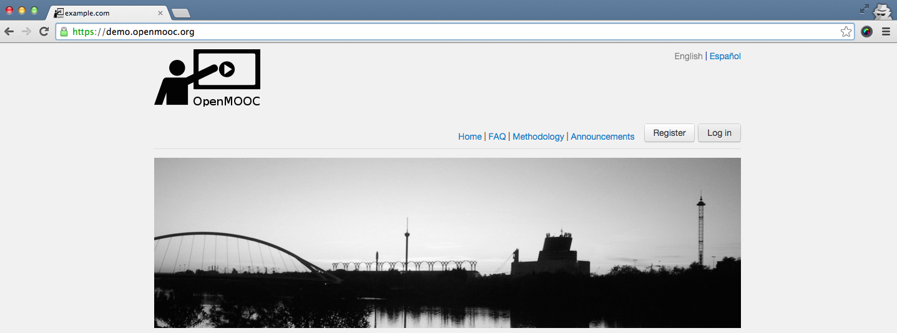
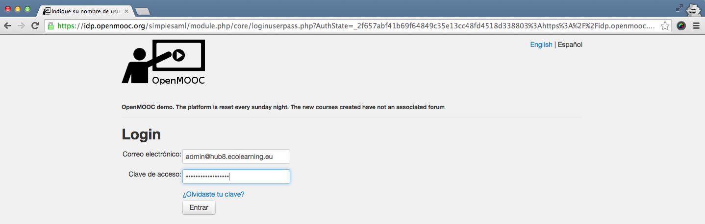
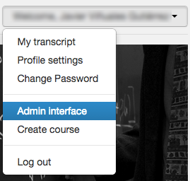
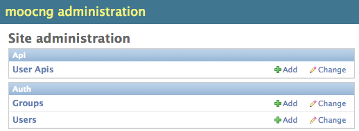
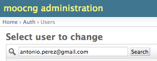
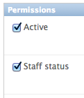

1. Permission to create a course¶
1.1. Overview¶
Only administrators of the platform can do this operation. It’s necessary that the administrator gives permission to create courses to an user, manually on request by email.
1.2. Steps to give permission to an user as course creator¶
Click login to enter the platform. You must be an administrator of the platform to do the following.
Fill the email and password fields in the login form.
When you are already logged, selected Admin interface in the dropdown menu you can access by clicking on the user name.
You have to select users in the admin interface.
Enter the name or email of the user you want to give permission to create courses in the search box
Select Staff status to give permission to create courses to the user and click save on the bottom of the page.
